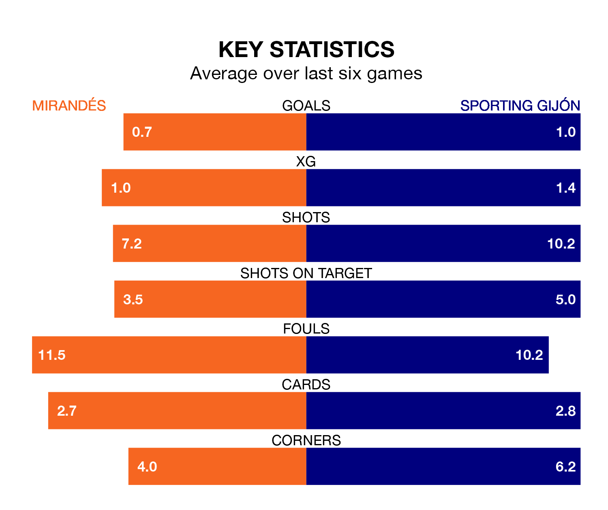

Mirandés are on a poor run ahead of hosting Sporting Gijón at Estadio Municipal de Anduva on Sunday, with just four points collected from their last six games.
Mirandés have picked up one win and one draw in their last six Segunda División games, and face a Sporting side whose last six games have brought two wins and four losses.
In the last 10 years, Mirandés and Sporting have played each other on 12 occasions. Mirandés won three of them, Sporting five, and they drew four times.
On average, Mirandés scored 1.1 goals and Sporting 1.8 in those matches.
Their last meeting was on August 20, when Sporting won 3-0 at home.
In Carlos Martín, Mirandés have one of the league's most on-form strikers so far this season. He has notched 13 goals in 31 appearances, to sit third in the scoring charts.
His goal rate of one every 169 minutes is quicker than that of Gaspar Campos Ansó Fernández, Sporting's top scorer with a goal every 222 minutes, and a total of 10 goals in 31 games.
With 38 goals in 33 games so far this season, the away side are scoring more than average in the league with 1.2 goals per game. And they are conceding fewer than average, letting in 32 goals at a rate of 1.0 per game.
The hosts, meanwhile, are average scorers, with 1.1 goals per game. They have conceded 1.4 goals per game.
Mirandés are 17th in the table after 33 games, of which they have won nine and drawn 10, earning 37 points.
Sporting are nine places ahead of Mirandés in eighth, with 13 wins and 10 draws putting them on 49 points.
Mirandés's last match was on March 30, a 1-0 loss against FC Andorra.
Sporting lost 3-2 against Racing Santander last time out, also on March 30, with Campos-Ansó Fernández and Uroš Đurđević on the scoresheet.
Updated: 10:31 (UTC), 31/03/24